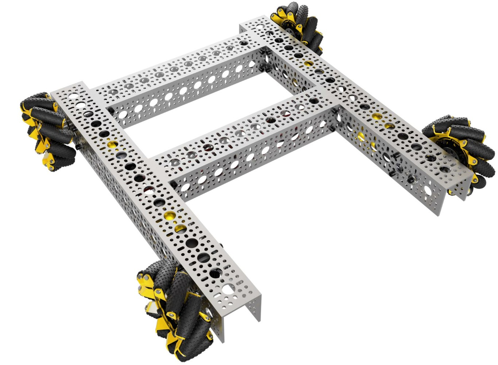
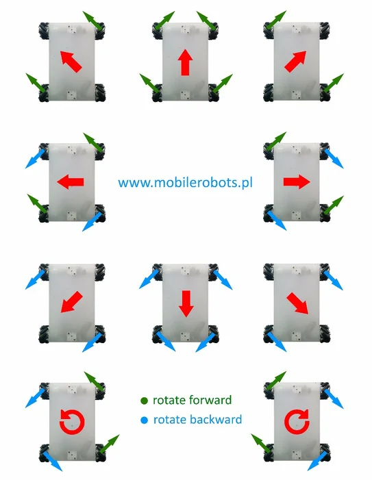

You already know how to make the robot drive forward, backward, and spin with tank drive. But watch your robot carefully -- it cannot move sideways. If you need to scoot three inches to the left to line up with a scoring target, you have to stop, turn, drive, turn back, and hope you end up in the right spot. That is slow, clumsy, and costs precious seconds in a match.
What if the robot could just slide sideways?
That is exactly what mecanum wheels give you. They let your robot move in any direction -- forward, backward, sideways, diagonally -- all without rotating. Combined with rotation, your robot gets complete freedom of movement. This is called a holonomic drivetrain, and it is what most competitive FTC teams use.

forward, backward, sideways, and diagonally -- without rotating first. This is called holonomic movement.
By the end of this lesson, you will replace your tank drive code with full mecanum drive, including strafing and rotation. Your robot will move like the competition code.
A normal wheel can only push in one direction -- the direction it rolls. But a mecanum wheel has a ring of rubber rollers mounted at a 45-degree angle around the outside of the wheel. When the wheel spins, those angled rollers can slide sideways while still pushing forward. That sideways slip is the magic ingredient.

Each wheel applies force at a 45-degree angle to its rolling direction. By spinning all four wheels at different speeds and directions, you can combine those angled forces to produce movement in any direction.
pushes at an angle. By combining all four wheels, you can create movement in any direction.
There is a catch -- mecanum wheels are not all identical. There are two types: left-hand and right-hand. The rollers on each type are angled in opposite directions.
On your robot, the wheels must be mounted in an X pattern when viewed from above. This means the rollers on all four wheels point toward the center of the robot, forming an X shape. Two wheels have left-hand rollers, and two have right-hand rollers.

point toward center). If mounted incorrectly (O pattern), strafing will not work and the robot drives unpredictably.
If the wheels are mounted in an O pattern instead (rollers pointing away from center), the robot loses all holonomic ability. Strafing will not work, driving straight will pull to one side, and the whole point of mecanum is lost. Always check the X pattern before driving!
Before we dive into the math, watch these two short videos to see how mecanum wheels work in the real world. Pay close attention to how the rollers create sideways motion.
Watch through the 8:30 mark: https://www.youtube.com/watch?v=AlsCUzCCc-k
https://www.youtube.com/watch?v=0k-Ey9bS9lE
After watching, you should have a good visual understanding of why the rollers are angled, how combining wheel directions produces strafing, and why the X pattern matters.
Before coding, take a few minutes to think about what you just learned. Answer these questions in your engineering notebook.
Use what you learned from the videos -- if you are unsure about any answer, do some additional research online.
List at least two of each.
What happens if they are mounted incorrectly?
Explain your reasoning.
versatility, and autonomous navigation. Cons: Think about traction, cost, complexity, and defense.
drive on versus what FTC robots drive on. Mecanum rollers are designed for smooth, flat surfaces. How would they handle gravel, rain, or a steep hill?
After you have written your answers, continue to the next section. There is no single right answer -- the goal is to think critically about the tradeoffs.
Strafing means moving sideways -- left or right -- without rotating the robot. The front of the robot stays pointing in the same direction the entire time while the whole robot slides to the side.

To understand how this works, imagine each wheel pushing at a 45-degree angle. If you spin all four wheels the right way, the forward components cancel out and the sideways components add up. The result is pure sideways motion.
Here is the pattern for strafing right:

Strafe Right:
Each wheel pushes at 45 degrees. The forward/backward forces cancel each other out. The sideways forces all point right. The robot slides to the right.
Strafe Left is the reverse -- flip every wheel direction.
45-degree rollers convert opposing wheel spins into a net sideways force. Forward/backward forces cancel out.
In tank drive, you had two inputs and a simple formula:
leftPower = drive + spin
rightPower = drive - spin
Mecanum drive has three inputs:
And each of the four motors gets its own power value. Here is the sign pattern for each component:
| Wheel | strafe | drive | turn | | --- | --- | --- | --- | | FL | + | + | + | | BL | - | + | + | | FR | - | + | - | | BR | + | + | - |
Written as formulas:
frontLeft = strafe + drive + turn
backLeft = -strafe + drive + turn
frontRight = -strafe + drive - turn
backRight = strafe + drive - turn
That looks like a lot, but there is a pattern. Let's break it down piece by piece.
When you want to go forward, all four wheels spin forward.
drive is added to every wheel with a + sign. This is the
same as tank drive -- all wheels working together.
To strafe right, you need the diagonal pattern from above.
Notice the signs on strafe:
The front-left and back-right wheels spin one way. The front-right and back-left wheels spin the other way. The forward/backward forces cancel, leaving pure sideways force.
Rotation works the same as tank drive. The left and right sides spin in opposite directions:
When turn is positive (right trigger), the left side goes
forward and the right side goes backward -- the robot rotates
clockwise (to the right).
The beauty of mecanum math is that you can
add all three components together. Want to strafe right while driving
forward and rotating clockwise at the same time? Just add
drive, strafe, and turn according to their signs for
each wheel. The physics takes care of the rest.
adding three components: drive, strafe, and turn. Each component has a specific sign pattern for each wheel. The three motions combine seamlessly.
Let's trace through the math with real numbers to make sure it makes sense.
Push the left stick straight up. drive = 1.0, strafe = 0,
turn = 0.
| Wheel | ± strafe | + drive | ± turn | = Power | | --- | --- | --- | --- | --- | | FL | +0 | +1.0 | +0 | 1.0 | | BL | -0 | +1.0 | +0 | 1.0 | | FR | -0 | +1.0 | -0 | 1.0 | | BR | +0 | +1.0 | -0 | 1.0 |
All four wheels spin forward at full power. The robot drives straight -- same as tank drive.
Push the left stick to the right. drive = 0, strafe = 1.0,
turn = 0.
| Wheel | ± strafe | + drive | ± turn | = Power | | --- | --- | --- | --- | --- | | FL | +1.0 | +0 | +0 | 1.0 | | BL | -1.0 | +0 | +0 | -1.0 | | FR | -1.0 | +0 | -0 | -1.0 | | BR | +1.0 | +0 | -0 | 1.0 |
FL and BR spin forward. BL and FR spin backward. The diagonal pattern produces pure sideways motion to the right.
Imagine turn = 1.0, everything else is zero.
| Wheel | ± strafe | + drive | ± turn | = Power | | --- | --- | --- | --- | --- | | FL | +0 | +0 | +1.0 | 1.0 | | BL | -0 | +0 | +1.0 | 1.0 | | FR | -0 | +0 | -1.0 | -1.0 | | BR | +0 | +0 | -1.0 | -1.0 |
Left side forward, right side backward. The robot spins clockwise -- just like tank drive.
Push the stick up and to the right. drive = 0.7,
strafe = 0.7, turn = 0.
| Wheel | ± strafe | + drive | ± turn | = Power | | --- | --- | --- | --- | --- | | FL | +0.7 | +0.7 | +0 | 1.4 | | BL | -0.7 | +0.7 | +0 | 0.0 | | FR | -0.7 | +0.7 | -0 | 0.0 | | BR | +0.7 | +0.7 | -0 | 1.4 |
FL and BR spin at full power, while BL and FR are stopped. Only two wheels are working, and they are diagonal -- the robot drives at a 45-degree angle to the right. Diagonal movement with zero rotation!
But wait -- FL came out to 1.4. Motor power only goes from
-1.0 to 1.0. We need to fix that. Read on!
When drive and strafe are equal, two opposite-corner wheels spin while the other two stop -- producing perfect 45-degree movement.
There is one problem with the formula. Look at Example 4 --
FL came out to 1.4. But motor power can only go from -1.0
to 1.0. If we send 1.4 to a motor, it gets clamped to
1.0 and the relative proportions are ruined.
The fix is normalization. After calculating all four powers, we find the largest absolute value. If it is greater than 1.0, we divide all four powers by that value. This scales everything down proportionally so nothing exceeds 1.0.
double max = Math.max(Math.abs(powFL), Math.abs(powBL));
max = Math.max(max, Math.abs(powFR));
max = Math.max(max, Math.abs(powBR));
if (max > 1.0) {
powFL /= max;
powBL /= max;
powFR /= max;
powBR /= max;
}
For Example 4, after normalization:
| Wheel | Raw Power | ÷ 1.4 | Normalized | | --- | --- | --- | --- | | FL | 1.4 | 1.4 ÷ 1.4 | 1.0 | | BL | 0.0 | 0.0 ÷ 1.4 | 0.0 | | FR | 0.0 | 0.0 ÷ 1.4 | 0.0 | | BR | 1.4 | 1.4 ÷ 1.4 | 1.0 |
The ratios stay the same (FL and BR are equal, BL and FR are zero), but now everything is within the valid range.
dividing all four by the largest absolute value (if it exceeds 1.0). This preserves the direction of movement while keeping all powers in the valid range.
You have the theory. Now let's put it into your robot.
The mecanum drive code replaces your tank drive code. We will keep your existing telemetry, button actions, and everything else -- we are only changing how the joystick controls the wheels.
In tank drive, you had two inputs: drive and spin. For
mecanum, you need three: drive, strafe, and turn.
We will use the left stick for drive and strafe, and the triggers for rotation (just like the competition code):
your Tank Drive code:
between the Add your tank drive code below comment and the
next comment block). Then type the code from the green block
in its place:
// === Mecanum Drive ===
// Read joystick inputs
double drive = -gamepad1.left_stick_y; // forward/back
double strafe = gamepad1.left_stick_x; // left/right
double turn = gamepad1.right_trigger // triggers for rotation
- gamepad1.left_trigger;
// Field-centric (challenge)
// Your rotation code goes here if you complete the challenge
The drive input is negated because the Y axis is inverted
(pushing up gives a negative number). strafe is left/right
on the same stick. turn uses the difference between the
triggers -- right trigger rotates clockwise (positive),
left trigger rotates counter-clockwise (negative).
you finer control. Triggers are analog (0.0 to 1.0), so a light squeeze gives a gentle rotation and a full squeeze gives a fast spin. Many competition teams prefer this layout.
Now compute the power for each wheel using the formula you learned.
block (not above it -- leave room for the challenge later):
// Compute per-wheel power using mecanum formula
double powFL = strafe + drive + turn;
double powBL = -strafe + drive + turn;
double powFR = -strafe + drive - turn;
double powBR = strafe + drive - turn;
Take a moment to match these signs against the formula table from earlier. Each line adds drive, strafe (with alternating signs), and turn (negative for left, positive for right).
If drive + strafe + turn add up to more than 1.0, we need to scale everything down.
// Normalize so no motor exceeds 1.0
double max = Math.max(Math.abs(powFL), Math.abs(powBL));
max = Math.max(max, Math.abs(powFR));
max = Math.max(max, Math.abs(powBR));
if (max > 1.0) {
powFL /= max;
powBL /= max;
powFR /= max;
powBR /= max;
}
This finds the biggest absolute power value across all four wheels. If it exceeds 1.0, all four are divided by that value. If everything is already within range, nothing changes.
The last step is the same as tank drive -- call setPower on
each motor. But now each motor gets its own power value
instead of sharing with its partner.
// Send power to each motor
frontLeft.setPower(powFL);
backLeft.setPower(powBL);
frontRight.setPower(powFR);
backRight.setPower(powBR);
Your complete Tank Drive section should now look like this:
// === Mecanum Drive ===
// Read joystick inputs
double drive = -gamepad1.left_stick_y;
double strafe = gamepad1.left_stick_x;
double turn = gamepad1.right_trigger
- gamepad1.left_trigger;
// Field-centric (challenge)
// Your rotation code goes here if you complete the challenge
// Compute per-wheel power using mecanum formula
double powFL = strafe + drive + turn;
double powBL = -strafe + drive + turn;
double powFR = -strafe + drive - turn;
double powBR = strafe + drive - turn;
// Normalize so no motor exceeds 1.0
double max = Math.max(Math.abs(powFL), Math.abs(powBL));
max = Math.max(max, Math.abs(powFR));
max = Math.max(max, Math.abs(powBR));
if (max > 1.0) {
powFL /= max;
powBL /= max;
powFR /= max;
powBR /= max;
}
// Send power to each motor
frontLeft.setPower(powFL);
backLeft.setPower(powBL);
frontRight.setPower(powFR);
backRight.setPower(powBR);
First, test on the bench robot to see the wheel patterns:
four wheels should spin forward at the same speed. Same as tank drive.
Watch the wheels carefully -- front-left and back-right should spin forward, while front-right and back-left spin backward. That is the diagonal pattern!
wheels should spin forward and the right wheels should spin backward -- the robot rotates clockwise.
right (45 degrees). Two wheels should spin and two should be nearly stopped. The robot moves diagonally.
Now go test on the competition field! Click Return to Match, load your code, and drive around. Try strafing side to side along a wall. Try driving diagonally to a corner. Try rotating while strafing -- all three inputs work at the same time.
simultaneously. This is the hallmark of holonomic movement -- complete freedom of motion.
Your mecanum drive works! But try this: drive out onto the field, then spin the robot 90 degrees to the right so it faces sideways. Now push the left stick straight up. The robot drives to the right from your perspective -- because "forward" on the stick means "forward for the robot," and the robot is facing right.
This is confusing. Every time the robot turns, you have to mentally rotate the stick directions to match. In a fast-paced match, that is a recipe for mistakes.
Field-centric driving fixes this. With field-centric, the joystick directions are locked to the field instead of the robot. Push the stick up, and the robot always moves away from you -- no matter which direction it is facing. Push the stick left, and the robot always moves to your left. The code automatically figures out which wheels to spin.
relative to the field (your point of view), not relative to the robot. The robot always moves the direction you push, regardless of which way it is pointing.
You already have the heading variable from your IMU code in
Lesson 4. It tells you exactly how far the robot has rotated
(in radians). Field-centric driving uses that heading to
"correct" the joystick inputs before the mecanum formula runs.
Think of it this way: when the robot is rotated 30 degrees to the right, your stick inputs are 30 degrees "off" from what you intend. The fix is to rotate the stick direction by negative 30 degrees to cancel that out. The result: the stick always means what you think it means.
Java has two built-in math functions called Math.cos() and
Math.sin(). You do not need to understand how they work
inside -- they are the tools that perform this rotation. You
give them an angle, and they give back numbers that let you
rotate a direction by that angle.
Right now your Tank Drive code reads the joystick and feeds
strafe and drive directly into the mecanum formula. For
field-centric, you need to add four lines at the
field-centric placeholder -- the two comment lines between
the joystick inputs and the mecanum formula. Those four lines
create two new variables -- fieldStrafe and fieldDrive --
which are the "corrected" versions of strafe and drive.
The placeholder is there for exactly this reason -- it keeps the field-centric code above the mecanum formula so it runs first.
Here is what you need to do:
Step 1: Open your code and find the field-centric placeholder:
[ MecanumDrive.java › Field-centric (challenge) ]
Step 2: Replace the Your rotation code goes here comment
with four lines of code. Keep the Field-centric (challenge)
comment above them so you can find this section later.
Here they are -- read carefully and type them in:
The first two lines get the rotation values from the heading. Notice the negative sign on heading -- that is what "undoes" the robot's rotation:
double cos = Math.cos(-heading);
double sin = Math.sin(-heading);
The next two lines apply the rotation to your stick inputs.
Each one is a mix of strafe, drive, cos, and sin:
double fieldStrafe = strafe cos - drive sin;
double fieldDrive = strafe sin + drive cos;
Step 3: Now you need to update the mecanum formula to use your new corrected values. Open the formula:
[ MecanumDrive.java › Compute per-wheel power ]
In all four pow lines, change every strafe to
fieldStrafe and every drive to fieldDrive. The turn
stays the same. For example, the first line changes from:
double powFL = strafe + drive + turn;
to:
double powFL = fieldStrafe + fieldDrive + turn;
Do the same for powBL, powFR, and powBR. Check the signs
carefully -- only the variable names change, not the signs.
Step 4: Save, recompile, and test! Spin the robot around and push the stick straight up. The robot should always drive away from you, no matter which direction it is facing. Push right -- it should always go right.
If it does not work, double-check: did you change all four
lines? Are fieldStrafe and fieldDrive spelled exactly the
same everywhere? Did you keep the minus sign on heading in
the cos and sin lines?
so it faces you. Push the stick UP. Without field-centric, the robot drives toward you. With field-centric, it drives away. That is the easiest test!
MecanumDrive.java (the reference version). The competition
code uses driveX / driveY instead of strafe / drive,
and fieldX / fieldY instead of fieldStrafe /
fieldDrive -- but the math is identical.
movement in any direction
toward center)
wheel pattern cancels forward/backward forces
while simultaneously rotating
drive ± strafe ± turn
exceeds the -1.0 to 1.0 range
math to make the joystick control movement relative to the field instead of the robot
reduced pushing power and more complexity
Your robot now moves like a competition machine. Forward, back, left, right, diagonal, spinning -- all at once if you want. Welcome to holonomic driving!